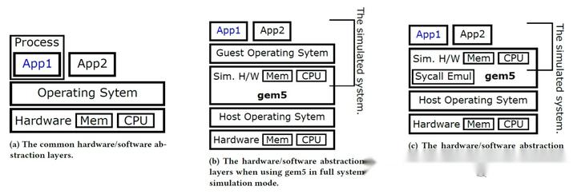
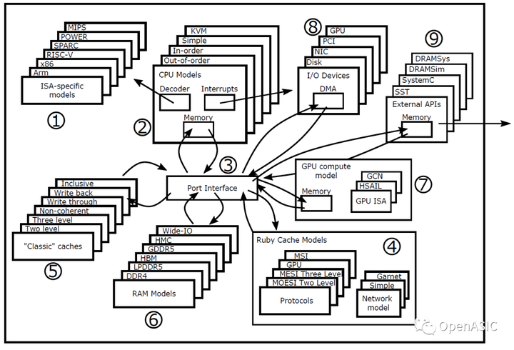
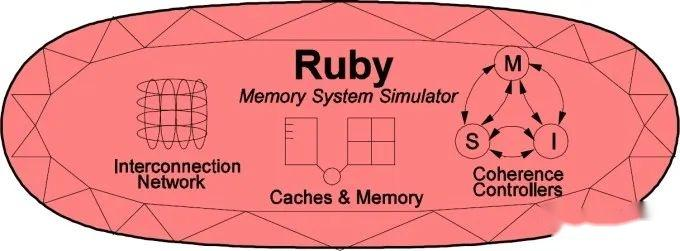

gem5模拟器简介
gem5是一个开源计算机架构模拟器，包括系统级架构以及处理器微架构。gem5的前身为密歇根大学的m5项目与威斯康星大学的GEMS项目。2011年m5与GEMS合并为gem5，目前被广泛用于学术界和工业界。通过谷歌学术可以看到，gem5目前被引用超过5000次，大量论文采用gem5作为研究工具。同时也被许多工业界公司使用，包括ARM、AMD、Google、Micron、Metempsy、HP、Samsung等。许多公司也积极为gem5添加了新功能或改进了现有功能。近年来，gem5社区仍在积极更新与开发，以支持未来15年的计算机架构研究。
gem5是一个模块化离散事件驱动的计算机系统模拟器平台。这意味着，架构研究人员在研究新架构时，只需添加或修改特定于目标的功能模块，而不需要了解模拟器的方方面面。同时，也使得gem5容易与其他模拟器联合仿真，构建联合模拟器平台或搭建自己的模拟系统，目前已有许多工作基于gem5开发了模拟平台。
gem5主要由C++和python编写的。其中C++占绝大多数，主要负责底层架构的具体实现等，python则负责对象的初始化、配置和模拟控制等。另外包含了两个领域特定语言DSL，其中ISADSL负责统一二进制指令的解码和语义规范，SLICC用于实现缓存一致性协议。
02
gem5的两种模式
图1gem5不同模式的比较
图1展示了不同情况下的硬件和软件抽象层。gem5模拟器可以在两种不同的模式下使用：全系统模式 (FS) 或系统调用模式 (SE)。
Fullsystemmode (FS)
启动完整的基于Linux的操作系统（例如Ubuntu20.04）
支持各种IO和其他外设等。
可以更好地执行多线程基准。
提高了仿真精度，提供更真实的交互。
Syscallemulationmode (SE)
不引导操作系统，内部模拟操作系统，模拟系统调用。
简化了地址翻译模型，是一个无调度的简单模型。
没有线程调度器，线程必须静态映射，限制了多线程应用。
具有较快的仿真速度。
03
gem5架构概述
图2gem5架构概览
gem5模拟器是一个由事件驱动的周期级的计算机系统模拟环境。如图2所示，gem5为系统组件实现了大量模型，包括CPU、DRAM、片上互连、一致性缓存、I/O设备等。这些模型都是参数化的，并且可以针对不同的系统进行定制。
gem5具有对多个ISA的模块化支持（图2①），目前支持Arm、x86、MIPS、Power、RISC-V、SPARC等。所有这些ISA都可以与gem5的任何CPU模型一起使用。
gem5包括四种不同的CPU模型（图2②）。Simple CPU模型可用于内存系统研究，可以更快地模拟系统，但与真实CPU相比过于简单。此外，gem5包含详细的有序执行CPU (Minor CPU) 和乱序执行CPU (O3 CPU)，虽然运行速度较慢，但可以提供更真实的结果。另外，gem5支持基于KVM的CPU模型，当主机ISA与gem5中运行的应用程序相同，它能绕过模拟并使用底层主机的处理器来运行gem5中运行的二进制文件，此时gem5上程序的运行速度和在主机上几乎相同。这主要可用于采样模拟以及快速前进到感兴趣区域和检查点位置。
为了连接不同的计算、内存和I/O设备模型，gem5提供了一个模块化Port接口，允许实现PortAPI的任何组件互联（图2③）。
gem5中有两种不同的缓存系统：Ruby（图2④）和Classic（图2⑤）。当使用Ruby缓存时，用户还可以选择片上网络模型，包括简单的Simple模型和详细的Garnet模型。
gem5模拟器还包括一个事件驱动，非周期级的DRAM模型（图2⑥）。DRAM模型很容易配置各种不同DRAM控制器的时序参数，包括DDR3、DDR4、GDDR、HBM、HMC、LPDDR4、LPDDR5等。
除了CPU模型，gem5还包含了一个基于周期级计算的GPU（图2⑦）。此模型是由AMD在gem5中贡献的，因此是基于AMD的GCN架构。目前不支持图形应用程序，但支持许多基于异构系统架构(HSA)和ROCm运行时的计算应用程序。另外，GPU模型有类似于gem5中的CPU模型的模块化ISA，因此将来可以扩展来支持其他GPU ISA。目前希望模拟NVDIA的GPU模型，可以与GPGPU-Sim模拟器进行联合仿真。
FS模式支持I/O和其他设备（图2⑧）。因此，gem5支持许多与系统无关的设备，例如磁盘控制器、PCI组件、以太网控制器等等。还有许多系统特定的设备模型，例如ArmGIC和SMMU，以及x86PC设备。
最后，gem5还可以与其他计算机架构模拟器系统集成，进行联合仿真（图2⑨）。例如，gem5已与Structural SimulationToolkit (SST)、DRAMSim等模拟器集成。此外，gem5也集成了SystemCAPI，使具有SystemC模型的用户能够将它们用作gem5组件，例如DRAMSys。
接下来，我们将再介绍一下CPU模型和缓存系统。
01
gem5的CPU模型
gem5的CPU模型和ISA是解耦的，每个CPU模型都可以与任何ISA一起使用，这是因为ISA的功能实现与CPU计时模型是分开的。因此，gem5可以在执行期间创建检查点，使用简单CPU模型或KVM模型快速前进到感兴趣的区域，并在运行时切换到详细的CPU模型。
根据对仿真速度和精度的不同要求，gem5模拟器提供四种基于中断的CPU模型：
AtomicSimple模型：模拟单IPC的CPU，是最简单的模型。该模型一个周期执行一条指令，内存访存模型为原子性操作，因此仅适用于功能模拟。
TimingSimple模型：在AtomicSimple模型的基础上模拟了访存内存的时序，CPU在内存返回前都是等待状态。
In-Order模型：模拟顺序访存的流水线，包含Fetch1、Fetch2、Decode、Execute，可配置数据结构与执行行为。
O3 模型：模拟指令的乱序执行，超标量执行和可执行多核并发的多线程任务。流水线默认为七级。
02
gem5的缓存系统
gem5具有两种缓存系统：“Classic”和“Ruby”，这是因为gem5的前身m5使用Classic缓存模型，GEMS使用Ruby缓存模型。
Classic的特点是能够简单快速地搭建起缓存系统，但其牺牲了一定的真实性与可配置性，例如其缓存一致性为MOESI的监听协议，与缓存代码紧密耦合，难以单独替换与修改缓存一致性。
Ruby为内存子系统实现了详细的仿真模型，它可以建模包含或独占的缓存层次结构、各类缓存替换策略、缓存一致性协议实现、互连网络、DMA和内存控制器、定序器等。这些模型是模块化的、灵活的和高度可配置的。这样我们可以单独地对某个存储层次系统的部件进行定制化的研究。例如可以对许多不同类型的缓存一致性实现进行建模，包括广播、目录、令牌、区域一致性等，并且很容易扩展到新的一致性模型。
图3Ruby系统框图